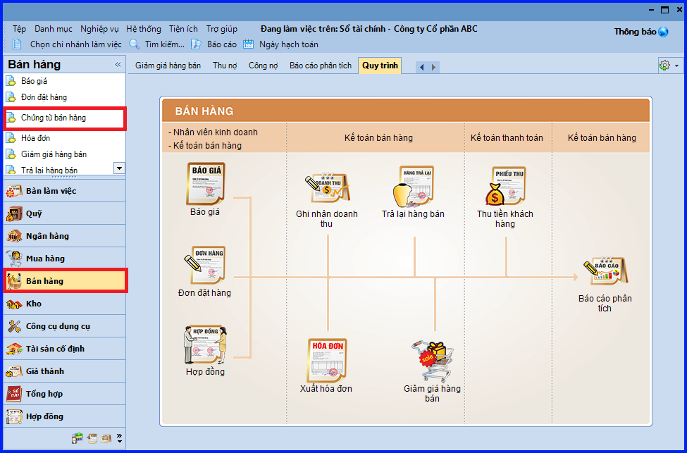
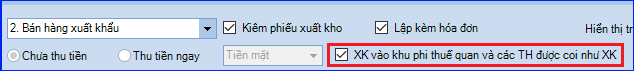
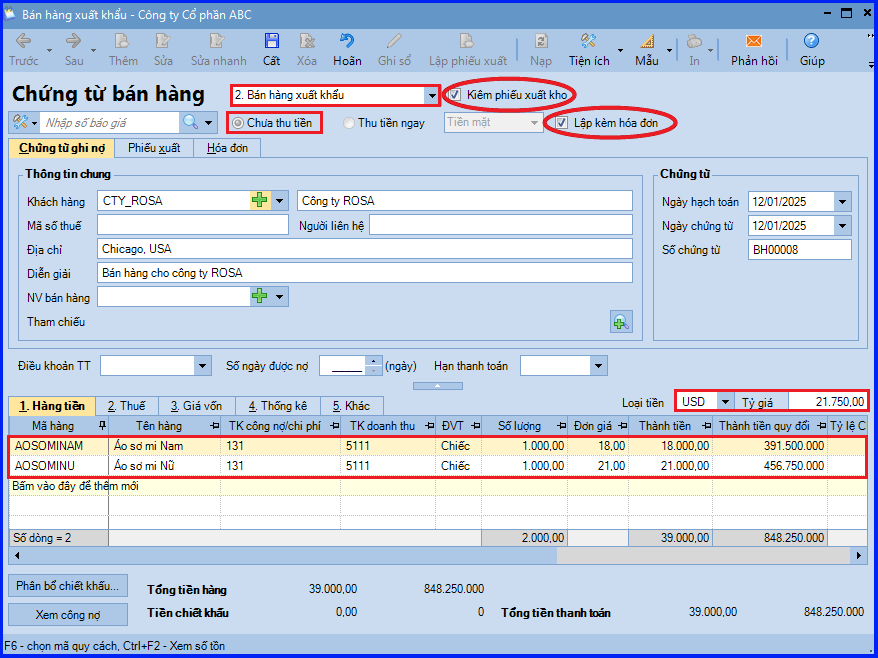
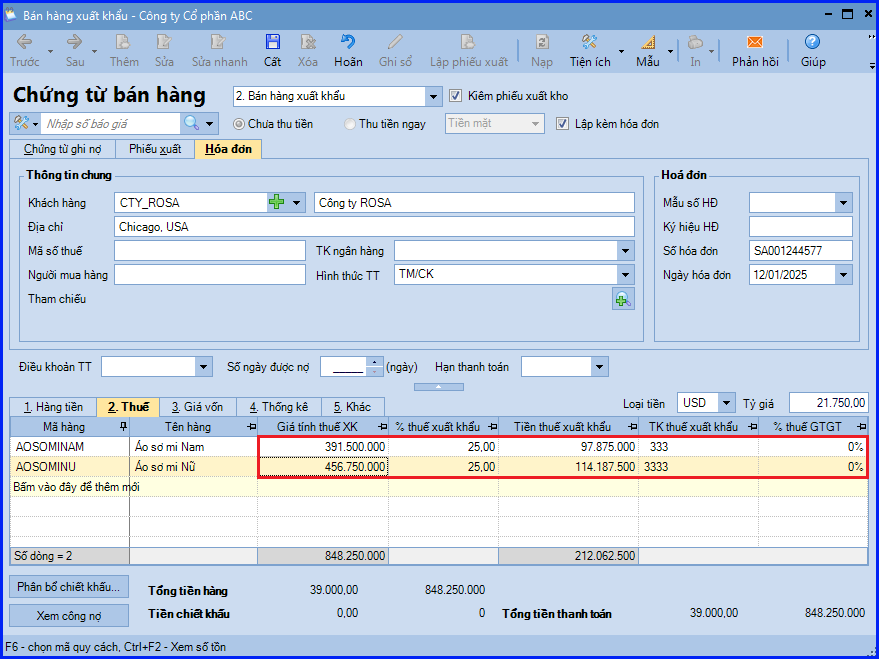
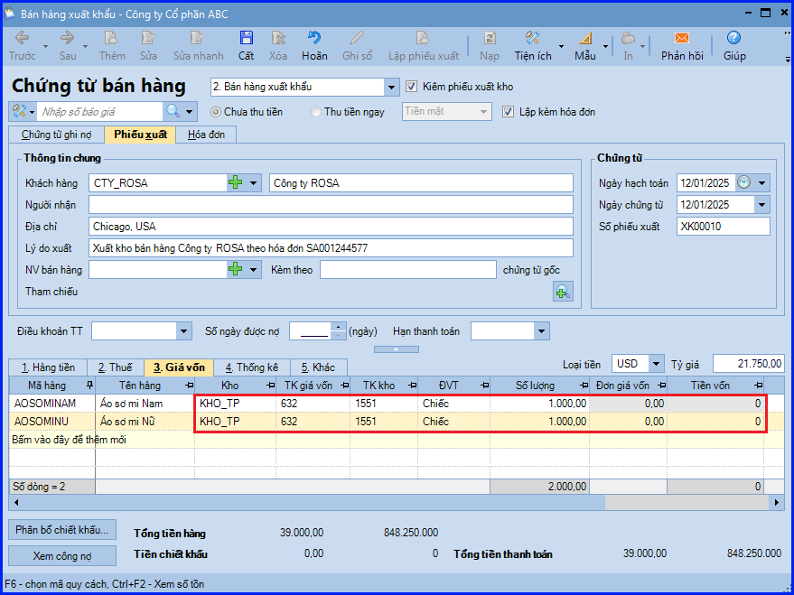
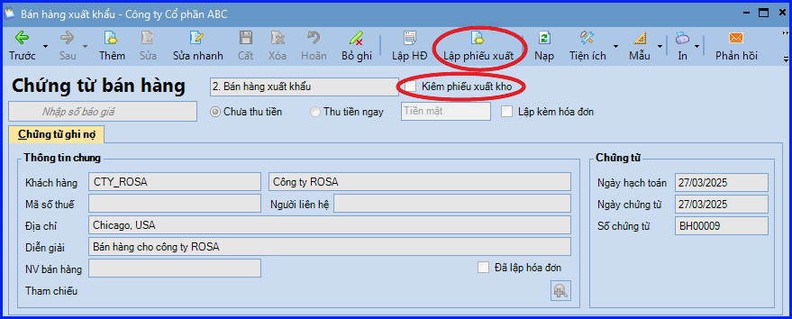
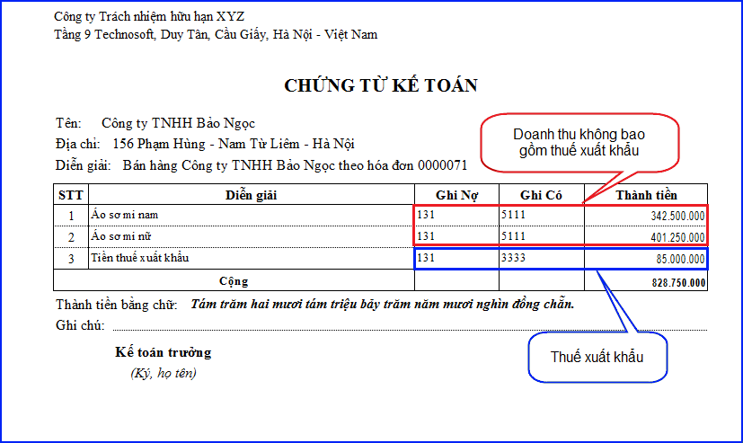

Hướng dẫn cách hạch toán ghi sổ nghiệp vụ bán hàng xuất khẩu trên phần mềm Misa
Khi phát sinh nghiệp vụ bán hàng xuất khẩu, thông thường sẽ phát sinh các hoạt động sau:
-
Nhân viên kinh doanh ký kết hợp đồng bán hàng xuất khẩu với khách hàng
-
Đặt chỗ trên tàu để xếp và chuyển hàng
-
Phát hành chứng từ xuất khẩu: Hợp đồng, Hóa đơn, Tờ khai, Vận đơn, Chứng nhận xuất xứ
-
Khi hàng ra đến cảng, sẽ được làm thủ tục để thông quan
-
Khi hàng bắt đầu rời cảng, bộ chứng từ cũng sẽ được gửi tới cho khách hàng.
-
Nhân viên kinh doanh thông báo cho khách hàng để theo dõi và nhận hàng
-
Yêu cầu khách hàng thanh toán sau khi đã nhận hàng
1. Các bút toán định khoản hạch toán khi doanh nghiệp bán hàng xuất khẩu
a) Ghi nhận doanh thu bán hàng, thuế xuất khẩu
Trường hợp 1: Trường hợp tách ngay được thuế xuất khẩu phải nộp tại thời điểm giao dịch phát sinh
- Nợ các TK 111, 112, 131 - Tổng giá thanh toán
- Có TK 511 - Doanh thu bán hàng và cung cấp dịch vụ
- Có TK 3333 - Thuế xuất nhập khẩu (chi tiết thuế Xuất Khẩu)
Trường hợp 2: Trường hợp không tách ngay được thuế xuất khẩu phải nộp tại thời điểm giao dịch phát sinh
- Hạch toán doanh thu
- Nợ TK 111, 112 131… - Tổng giá thanh toán
- Có TK 511 - Doanh thu bán hàng và cung cấp dịch vụ
- Xác định số thuế xuất khẩu phải nộp
- Nợ TK 511 - Doanh thu bán hàng
- Có TK 3333 - Thuế xuất, nhập khẩu
b) Ghi nhận giá vốn
- Nợ TK 632 - Giá vốn hàng bán
- Có TK 155, 156…
c) Khi nộp thuế xuất khẩu vào ngân sách nhà nước
- Nợ TK 3333 - Thuế xuất, nhập khẩu
- Có TK 111, 112…
2. Các bước thực hiện hạch toán, ghi sổ nghiệp vụ bán hàng xuất khẩu trên phần mềm Misa
- Vào phân hệ "Bán hàng" => chọn "Chứng từ bán hàng" (hoặc vào tab "Bán hàng" => ấn "Thêm").

- Khai báo thông tin chi tiết về chứng từ bán hàng xuất khẩu:
+ Chọn loại chứng từ bán hàng là "Bán hàng xuất khẩu" => Chương trình sẽ mặc định luôn phương thức thanh toán là "Chưa thu tiền".
+ Tích chọn "Kiêm phiếu xuất kho".
+ Tích chọn "Lập kèm hóa đơn".
CHÚ Ý: Với đơn vị Sử dụng hóa đơn điện tử và bán hàng thuộc trường hợp Xuất vào khu phi thuế quan và các trường hợp được coi như xuất khẩu thì tích chọn Xuất Khẩu vào khu phi thuế quan và các Trường Hợp được coi như Xuất Khẩu. khi đó, chương trình cho phép phát hành hóa đơn điện tử trên chứng từ bán hàng xuất khẩu.

+ Mục "Điều khoản Thanh Toán" (áp dụng với phương thức Chưa thu tiền): Chọn điều khoản đã được thiết lập trên danh mục "Điều khoản thanh toán", nếu có thỏa thuận về điều kiện thanh toán với khách hàng
=> Trường hợp đã thiết lập điều khoản thanh toán cho từng khách hàng tại danh mục "Khách hàng", thì chương trình sẽ tự động hiển thị sẵn thông tin này theo khách hàng được chọn. Khai báo thông tin chi tiết về chứng từ bán hàng xuất khẩu:
=> Trường hợp đã thiết lập điều khoản thanh toán cho từng khách hàng tại danh mục "Khách hàng", thì chương trình sẽ tự động hiển thị sẵn thông tin này theo khách hàng được chọn. Khai báo thông tin chi tiết về chứng từ bán hàng xuất khẩu:
CHÚ Ý: Có thể theo dõi tình hình thanh toán công nợ với Nhà cung cấp theo điều khoản thanh toán.
+ Chọn "Loại tiền" => Tỷ giá sẽ được tự động lấy lên theo cách thiết lập tại danh mục "Loại tiền" (Có thể nhập lại tỷ giá theo đúng thực tế nếu cần).
+ Khai báo các mặt hàng được bán ra:
- Tại cột "Đơn giá": nhập đơn giá bán đã bao gồm thuế xuất khẩu.

+ Khai báo các thông tin về thuế và hóa đơn:
- Tại cột "Giá tính thuế Xuất Khẩu": tự nhập tay giá tính thuế xuất khẩu theo tờ khai hải quan.

+ Khai báo các thông tin xuất kho => "Giá vốn xuất kho" sẽ được chương trình tự động tính căn cứ vào phương pháp tính giá xuất kho đã được thiết lập trên "Hệ thống" => "Tùy chọn" => "Vật tư hàng hóa".

- Các bạn ấn "Cất".
CHÚ Ý:
- Trường hợp Thủ kho có tham gia sử dụng phần mềm, sau khi chứng từ bán hàng xuất khẩu được lập, chương trình sẽ tự động sinh ra phiếu xuất kho trên tab "Đề nghị nhập, xuất kho" của Thủ kho. Thủ kho sẽ thực hiện ghi sổ phiếu xuất kho vào sổ kho.
- Trường hợp việc xuất hóa đơn và lập chứng từ bán hàng không được thực hiện đồng thời.
- Trường hợp phiếu xuất kho không được lập kèm chứng từ bán hàng, sau khi cất chứng từ, Kế toán có thể sử dụng chức năng "Lập phiếu xuất" để lập nhanh phiếu xuất kho cho các mặt hàng được bán.

- Với dữ liệu kế toán (TT200), khi in chứng từ kế toán chương trình sẽ tách riêng để hạch toán doanh thu bán hàng và thuế xuất khẩu.

- Khi lập báo cáo "Tổng hợp bán hàng", giá trị hàng xuất khẩu lấy lên cột "Doanh số bán" là giá đã bao gồm thuế xuất khẩu.
- Khi muốn quy đổi Số Lượng Vật Tư Hàng Hóa theo 1 đơn vị tính ra đồng thời nhiều đơn vị tính khác nhau, tương ứng với Đơn Vị Tính đóng gói hàng hóa của đơn vị trên chứng từ bán hàng kiêm phiếu xuất kho.
KẾ TOÁN DIỆU TÂM chúc các bạn làm tốt!
=============================
Nếu bạn muốn thành thạo các kỹ năng làm kế toán trên phần mềm Misa
Thì bạn có thể tham khảo "Khóa Học Thực Hành Kế Toán Trên Phần Mềm Misa" tại Công ty đào tạo Kế Toán Diệu Tâm
Trong khóa học này, bạn sẽ được dạy cách lên sổ sách, lập báo cáo tài chính trên phần mềm Misa
Chi tiết về chương trình đào tạo bạn xem tại đây nhé: Khóa học thực hành kế toán trên Misa
=============================
=============================
Nếu bạn muốn thành thạo các kỹ năng làm kế toán trên phần mềm Misa
Thì bạn có thể tham khảo "Khóa Học Thực Hành Kế Toán Trên Phần Mềm Misa" tại Công ty đào tạo Kế Toán Diệu Tâm
Trong khóa học này, bạn sẽ được dạy cách lên sổ sách, lập báo cáo tài chính trên phần mềm Misa
Chi tiết về chương trình đào tạo bạn xem tại đây nhé: Khóa học thực hành kế toán trên Misa
=============================